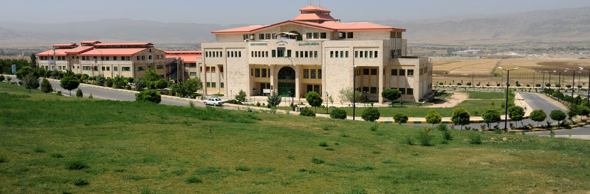

به دانشگاه یاسوج خوش آمدید
دانشگاه یاسوج یکی از دانشگاههای معتبر ایران است که در زمینه آموزش و پژوهش فعالیت میکند.
دانشکدههای دانشگاه
دانشکده فنی و مهندسی
آموزش رشتههای مهندسی و فناوریهای نوین
دانشکده علوم
فعالیت در زمینه علوم پایه و پژوهش
دانشکده کشاورزی
آموزش و تحقیق در حوزه کشاورزی
دانشکده علوم انسانی
آموزش رشتههای علوم انسانی، مدیریت و معارف
آمار دانشگاه
7000+
دانشجو
300+
عضو هیئت علمی
50+
رشته تحصیلی
1375
سال تأسیس
آخرین اخبار دانشگاه
برگزاری همایش علمی
دانشگاه یاسوج میزبان رویدادهای علمی و پژوهشی جدید است.
ثبتنام دانشجویان
اطلاعیههای مربوط به ثبتنام و امور آموزشی دانشگاه.
دستاوردهای پژوهشی
معرفی پروژهها و فعالیتهای پژوهشی دانشگاه.
تماس با ما
آدرس
یاسوج، بلوار دانشگاه، دانشگاه یاسوج
تلفن
074-31000000
ایمیل
info@yu.ac.ir